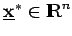

Inhalt Index DeskTop Bronstein

 Optimierung Nichtlineare Optimierung Problemstellung und theoretische Grundlagen Optimalitätsbedingungen
Optimierung Nichtlineare Optimierung Problemstellung und theoretische Grundlagen Optimalitätsbedingungen


Ein Punkt  genügt den globalen KUHN-TUCKER-Bedingungen, wenn ein  , d.h. ein
, d.h. ein  existiert, so daß
existiert, so daß  ein Sattelpunkt von L ist.
ein Sattelpunkt von L ist.
Wegen des Beweises der KUHN-TUCKER-Bedingungen s. Abschnitt Trennung konvexer Mengen.